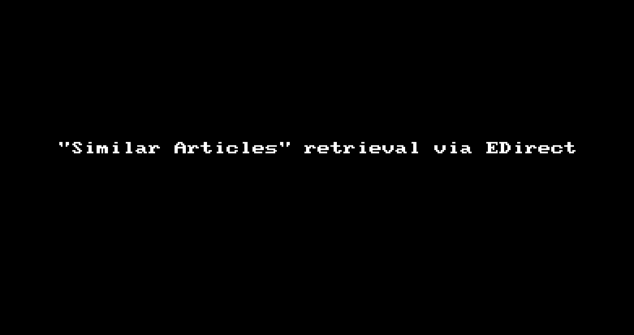

3 Tools
3.1 citationchaser
citationchaser is a free tool for citation searching. citationchaser is an R package, deployed as a shinyapp at https://estech.shinyapps.io/citationchaser/. It uses the Lens.org Scholarly API for the retrieval of bibliographic information and for backward and forward citation searching.(Haddaway et al. (2022), Haddaway et al. (2021))
3.2 CRediT
The Contributor Roles Taxonomy (CRediT) is an American National Standard developed by the National Information Standards Organization (NISO). See NISO CRediT Working Group (2022) and https://credit.niso.org/ for more information. It provides a convention for describing the contributions of authors in scholarly publications. (Allen et al. (2019))
The idea behind the CRediT standard is to facilitate the recognition of author contributions and to make the authorship more transparent. When an article is submitted for publication, the contributions of each author can be described using the contributer roles described in the following table.
| Contributer Roles | Definition |
|---|---|
| Conceptualization | Ideas; formulation or evolution of overarching research goals and aims. |
| Data curation | Management activities to annotate (produce metadata), scrub data and maintain research data (including software code, where it is necessary for interpreting the data itself) for initial use and later re-use. |
| Formal analysis | Application of statistical, mathematical, computational, or other formal techniques to analyze or synthesize study data. |
| Funding acquisition | Acquisition of the financial support for the project leading to this publication. |
| Investigation | Conducting a research and investigation process, specifically performing the experiments, or data/evidence collection. |
| Methodology | Development or design of methodology; creation of models. |
| Project administration | Management and coordination responsibility for the research activity planning and execution. |
| Resources | Provision of study materials, reagents, materials, patients, laboratory samples, animals, instrumentation, computing resources, or other analysis tools. |
| Software | Programming, software development; designing computer programs; implementation of the computer code and supporting algorithms; testing of existing code components. |
| Supervision | Oversight and leadership responsibility for the research activity planning and execution, including mentorship external to the core team. |
| Validation | Verification, whether as a part of the activity or separate, of the overall replication/reproducibility of results/experiments and other research outputs. |
| Visualization | Preparation, creation and/or presentation of the published work, specifically visualization/data presentation. |
| Writing – original draft | Preparation, creation and/or presentation of the published work, specifically writing the initial draft (including substantive translation). |
| Writing – review & editing | Preparation, creation and/or presentation of the published work by those from the original research group, specifically critical review, commentary or revision - including pre- or post-publication stages |
Author Contributions
Jane Doe: Conceptualization, Methodology, Software, Writing - review & editing. John Smith: Data curation, Writing - original draft. Alex Miller: Visualization, Investigation, Writing - original draft. Max Headroom: Supervision, Writing - reviewing & editing.
3.3 Entrez Programming Utilities
The Entrez Programming Utilities (E-utilities) are a set of nine programs which provide an API to the Entrez database system of the NCBI. Comprehensive information about the E-utilifies is available in the official E-utilities Help.
3.3.1 E-utilities via URL
These programs are server-based and can be deployed using different URLs. These URLs to query Entrez are composed of the base URL https://eutils.ncbi.nlm.nih.gov/entrez/eutils/ to which a string with the desired utility and the query is attached, for instance esearch.fcgi?db=pubmed&term=BMJ[journal]+AND+hernia+AND+2010[pdat]
The results for these queries are usually returned as XML-structured data.
3.3.2 Entrez Direct
The E-utilities are also available directly on a Unix shell under Linux or macOS by using the package Entrez Direct (EDirect).
One of the main advantages of EDirect are the commands that are available on the shell, for example grep, sort, uniq or wc, which allow the results to be processed directly. Also shell scripts can be used to automate the processing.
The command
will return all PMIDs of publications which PubMed identifies as Similar Articles for the PMIDs 25554246 and 29463298.

On PubMed the Similar Articles search can be carried out for only one PMID at a time, whereas using the E-utilities it is possible to search with many PMIDs in a single query.
There is a quick and easy way to get access to Linux and its shell even when one is running a (modern) Windows PC: The Windows Subsystem for Linux (WSL) provides an environment to install Linux from within Windows (10 or later).
For more on this, see
3.4 FINER
FINER is an acronym for the five criteria feasible, interesting, novel, ethical and relevant which can be used as guidance when formulating a good clinical research question. See Table 3.2. (Cummings et al. (2013))
| feasible | The research question should not exceed the available resources, i.e. participants, expertise, time and money). |
| interesting | The research question should in itself be interesting, not only to the researcher, but also to a broader public. |
| novel | The gain of knowledge and new information should be at the heart of the question. Research usually does not only reiterate already established data unless it is designed as a confirmatory study. |
| ethical | Proper research has to be ethical and must not bear unacceptable risks for its participants. |
| relevant | The expected impact of the research on scientific knowledge and clinical processes can be a good measurement parameter for the relevance. |
3.5 GRADE
GRADE is short for Grades of Recommendation, Assessment, Development, and Evaluation. The GRADE approach provides guidance for rating quality of evidence and grading strength of recommendations in health care. (G. H. Guyatt, Oxman, Schünemann, et al. (2011))
The GRADE approach is described in several publications (see info box below) developed by the GRADE working group, a collaboration of experts working in the field of evidence-based medicine.
More information can be found in the online GRADE book.
Introductory articles
- Introduction and summary of findings tables (G. Guyatt et al. (2011))
- Framing the question and deciding on the importance of outcomes (G. H. Guyatt, Oxman, Kunz, Atkins, et al. (2011))
- Rating the quality of evidence (Balshem et al. (2011))
Rating the quality of evidence
- Rating the quality of evidence – study limitations (risk of bias) (G. H. Guyatt, Oxman, Vist, et al. (2011))
- Rating the quality of evidence – publication bias (G. H. Guyatt, Oxman, Montori, et al. (2011))
- Rating the quality of evidence – imprecision (G. H. Guyatt, Oxman, Kunz, Brozek, et al. (2011))
- Rating the quality of evidence – inconsistency (G. H. Guyatt, Oxman, Kunz, Woodcock, Brozek, Helfand, Alonso-Coello, Glasziou, et al. (2011))
- Rating the quality of evidence – indirectness (G. H. Guyatt, Oxman, Kunz, Woodcock, Brozek, Helfand, Alonso-Coello, Falck-Ytter, et al. (2011))
- Rating up the quality of evidence (G. H. Guyatt, Oxman, Sultan, et al. (2011))
- Considering resource use and rating the quality of economic evidence (Brunetti et al. (2013))
Summarizing the evidence
- Making an overall rating of confidence in effect estimates for a single outcome and for all outcomes (G. Guyatt et al. (2013))
- Preparing summary of findings tables – binary outcomes (G. H. Guyatt, Oxman, et al. (2013))
- Preparing summary of findings tables and evidence profiles – continuous outcomes (G. H. Guyatt, Thorlund, et al. (2013))
Further guidelines
- Going from evidence to recommendations: the significance and presentation of recommendations (J. Andrews et al. (2013))
- Going from evidence to recommendation – determinants of a recommendation’s direction and strength (J. C. Andrews et al. (2013))
- GRADE evidence to decision frameworks for tests in clinical practice and public health (Schünemann et al. (2016))
- Assessing the risk of bias associated with missing participant outcome data in a body of evidence (Guyatt et al. (2017))
- How ROBINS-I and other tools to assess risk of bias in nonrandomized studies should be used to rate the certainty of a body of evidence (Schünemann, Cuello, et al. (2019))
- Assessing the certainty of evidence in the importance of outcomes or values and preferences – risk of bias and indirectness (Zhang, Alonso-Coello, et al. (2019))
- Assessing the certainty of evidence in the importance of outcomes or values and preferences – inconsistency, imprecision, and other domains (Zhang, Coello, et al. (2019))
- Guideline 21 - test accuracy
- Part 1. Study design, risk of bias, and indirectness in rating the certainty across a body of evidence for test accuracy (Schünemann et al. (2020a))
- Part 2. Test accuracy: inconsistency, imprecision, publication bias, and other domains for rating the certainty of evidence and presenting it in evidence profiles and summary of findings tables (Schünemann et al. (2020b))
- The GRADE approach for tests and strategies – from test accuracy to patient-important outcomes and recommendations (Schünemann, Mustafa, et al. (2019))
- Considering cost-effectiveness evidence in moving from evidence to health-related recommendations (Xie et al. (2023))
- Optimizing the integration of randomized and non-randomized studies of interventions in evidence syntheses and health guidelines (Cuello-Garcia et al. (2022))
- –
- Informative statements to communicate the findings of systematic reviews of interventions (Santesso et al. (2020))
- How to calculate absolute effects for time-to-event outcomes in summary of findings tables and Evidence Profiles (Skoetz et al. (2020))
- Use of GRADE for the assessment of evidence about prognostic factors: rating certainty in identification of groups of patients with different absolute risks (Foroutan et al. (2020))
- Rating the certainty in time-to-event outcomes—Study limitations due to censoring of participants with missing data in intervention studies (Goldkuhle et al. (2021))
- The GRADE approach to assessing the certainty of modeled evidence – An overview in the context of health decision-making (Brozek et al. (2021))
- Assessing the certainty across a body of evidence for comparative test accuracy (Yang et al. (2021))
- GRADE offers guidance on choosing targets of GRADE certainty of evidence ratings (Zeng et al. (2021))
- Addressing imprecision in a network meta-analysis (Brignardello-Petersen et al. (2021))
- Update on rating imprecision using a minimally contextualized approach (Zeng et al. (2022))
- Update on rating imprecision for assessing contextualized certainty of evidence and making decisions (Schünemann et al. (2022))
- Updates to GRADE’s approach to addressing inconsistency (Guyatt et al. (2023))
- Rating imprecision in a body of evidence on test accuracy (Mustafa et al. (2024))
- Updated guidance for rating up certainty of evidence due to a dose-response gradient (Murad et al. (2023))
- Using GRADE-ADOLOPMENT to adopt, adapt or create contextualized recommendations from source guidelines and evidence syntheses (Klugar et al. (2024))
3.6 PICO
PICO is an acronym for the four concepts Population, Intervention, Comparison and Outcome. Concepts like these are used for defining research questions as well as eligibility criteria for the studies relevant for answering the question.
| Population | The patient group, problem or illness that should be diagnosed or treated as part of the study. |
| Intervention | The diagnostic or therapeutic action to be examined in the study. |
| Comparison | Diagnostic or therapeutic actions to compare the intervention with. This could be another established procedure, a placebo or no treatment at all. |
| Outcome | A measure of effect of the intervention. |
There are other concepts and mnemonics for different kinds of research questions, such as SPIDER, ECLIPSE, PIRD or PICOS. (Munn et al. (2018), Methley et al. (2014), Eriksen and Frandsen (2018))
3.7 PRESS
Peer Review of Electronic Search Strategies (PRESS) by McGowan et al. (2016) is an evidence-based guideline for the peer review of search strategies. It is mainly focused on systematic review projects, health technology assesments (HTAs) and other kinds of reviews. A main tool for PRESS is a checklist which guides the reader through the process of peer review.
3.8 PRISMA
Preferred Reporting Items for Systematic Reviews and Meta-Analyses (PRISMA) by Page, McKenzie, et al. (2021) is a set of minimum requirements for the reporting and documentation of systematic reviews. The goal of PRISMA is to set standards for reporting and in doing so increase the overall quality of systematic reviews. A detailed explanatory paper was published by Page, Moher, et al. (2021).
PRISMA also provides tools such as a checklist and a flowchart, which can be used for creating the recommended tables and figures for publication. (Rethlefsen and Page (2021))
There are additional extensions of PRISMA for various purposes, such as PRISMA-S for the documentation of systematic literature searches (Rethlefsen et al. (2021)) or PRISMA-ScR for scoping reviews (Tricco et al. (2018)).
See also https://prisma-statement.org.
3.9 PubReMiner
The PubMed PubReMiner is an online tool that enables the user to extract information from the results of a PubMed query.
Upon entering search terms (in valid PubMed syntax), PubReMiner summarizes the results of the query by creating tables with the following information:
- year of publication
- abbreviated journal name
- author
- free text terms
- MeSH terms
- substances
- publication type
- country
The tool can be used to extract data from a set of seed papers simply by entering their PMIDs as a search query.
The PubReMiner is maintained by Jan Koster from the Amsterdam University Medical Centers (Amsterdam UMC).
3.10 RAISE
RAISE is the abbreviation for Responsible use of AI in evidence SynthEsis, which is a project for providing guidance regarding the responsible use of Artificial Intelligence in evidence synthesis. Currently, there are drafts of three core documents:
- RAISE 1 - recommendations for practice
- RAISE 2 - building and evaluating AI evidence synthesis tools
- RAISE 3 - selecting and using AI evidence synthesis tools
See Thomas et al. (2025) for more details and the current document versions. RAISE is currently in preparation for peer-reviewed publication.
3.11 Reference Management software
Bibliographic records and similar sets of data such as clinical study metadata can be stored and managed using reference management programs (also called citation management software).
These programs are usually able to perform tasks with the records, such as
- import and export of various formats (e.g. RIS, NBIB, BIB, TXT, CSV, XML)
- creation, editing and updating
- deduplication
- retrieval of full-texts
- output of citations in various styles
| Tool | URL | Notes |
|---|---|---|
| Citavi | https://www.citavi.com | fee-based |
| EndNote | https://www.endnote.com | fee-based |
| JabRef | https://www.jabref.org | free |
| Mendeley | https://www.mendeley.com | limited free version |
| Zotero | https://www.zotero.org | free |
For comparisons of reference management software see also https://mediatum.ub.tum.de/1320978 and https://en.wikipedia.org/wiki/Comparison_of_reference_management_software.
3.12 screening tools
The screening of records to classify them according to previously defined eligibility criteria is a laborious task.
Tools have been developed which allow the management of references for this particular task. They offer various features to accelerate or facilitate the selection process, such as deduplication, keyword highlighting, AI-based sorting or automated exclusion of records.
The following table lists a few of those tools:
| Tool | URL | Notes |
|---|---|---|
| Abstrackr | https://abstrackr.com | free of charge |
| ASReview | https://asreview.nl | free of charge, requires installation |
| Catchii | https://catchii.org | free of charge |
| colandr | https://www.colandrapp.com | free of charge |
| Covidence | https://covidence.org | fee-based, free trial project |
| PICO Portal | https://picoportal.org | fee-based, free trial project |
| rayyan | https://www.rayyan.ai | fee-based, 3 review projects are free |
| TERA | https://tera-tools.com | free of charge |
See also: Carey et al. (2022), Bruin et al. (2025), Halman and Oshlack (2024), Kahili-Heede and Hillgren (2021), Ouzzani et al. (2016)
3.13 searchbuildR
searchbuildR is a tool written in R. Its purpose is to support the development of search strategies by identifing search terms from a set of seed papers.(Kapp et al. (2024))
searchbuildR takes a set of references (e.g. as a RIS file) as input and identifies terms, which are overrepresented within this set compared with a large corpus of PubMed references.
searchbuildR is an R package, which can be installed from GitHub and run locally as a Shiny App in R:
searchbuildR is developed and maintained by IQWiG.
3.14 TARCiS
The TARCiS Statement by Hirt et al. (2024) provides guidance on Terminology, Applications, and the Reporting of Citation Searching in the context of systematic searching. It offers recommendations as well as a checklist for the most imporant items required to report in a review. Please refer to the section on citation searching for more information about the techniques.
3.15 Yale MeSH Analyzer
The Yale MeSH Analyzer is an online tool for analyzing the bibliographic information of up to 20 PubMed records at once. It can be used to identify relevant search terms from the a set of seed papers.
In principle, upon entering PMIDs into the tool, it creates a summary table containing MeSH terms and author keywords for each publication (see Table 3.6).
| PMID | 38644158 | 30916023 | 38093118 |
|---|---|---|---|
| Title | Ventilatory efficiency as a prognostic factor for postoperative… | Ventilatory inefficiency adversely affects outcomes and longer-… | A retrospective analysis of the association of effort-independe… |
| Author (Year) | Vetsch T (2024) | Wilson RJT (2019) | Franssen RFW (2023) |
| MeSH Headings | Aged Aged, 80 and over |
Aged | |
| Carbon Dioxide / me Colorectal Neoplasms / pp Colorectal Neoplasms / su* |
Colorectal Surgery* | ||
| Elective Surgical Procedures* / ae Exercise Test / mt |
Exercise Test / mt* Exercise Tolerance |
Exercise Test | |
| Female | Female | ||
| Humans | Humans | Heart Failure* Humans |
|
| Lung / pp* | |||
| Male | Male | ||
| Oxygen Consumption / ph | Oxygen Consumption | ||
| Postoperative Complications* / ep Prognosis |
Postoperative Complications / di Postoperative Complications / ep* Postoperative Complications / pp Pulmonary Ventilation / ph* |
Postoperative Complications / ep Prognosis |
|
| Retrospective Studies Risk Factors |
Retrospective Studies | ||
| Survival Analysis | |||
| United Kingdom / ep | |||
| Author Keywords | VE/VCO(2) exercise testing major surgery postoperative complications postoperative mortality prediction models preoperative assessment ventilatory efficiency |
cardiopulmonary exercise testing colorectal surgery mortality perioperative risk factors pre-operative evaluation ventilatory inefficiency |
Abdominal surgery Anaerobic threshold Cardiopulmonary exercise testing Oxygen uptake efficiency slope Peak oxygen uptake Preoperative care Preoperative risk assessment |
The Yale MeSH Analyzer is maintained by the Cushing/Whitney Medical Library at Yale University.